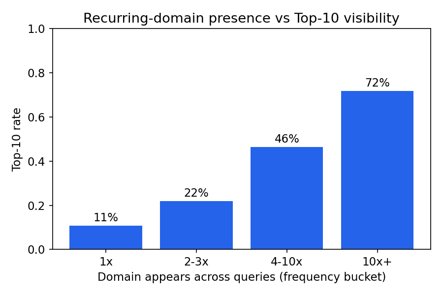
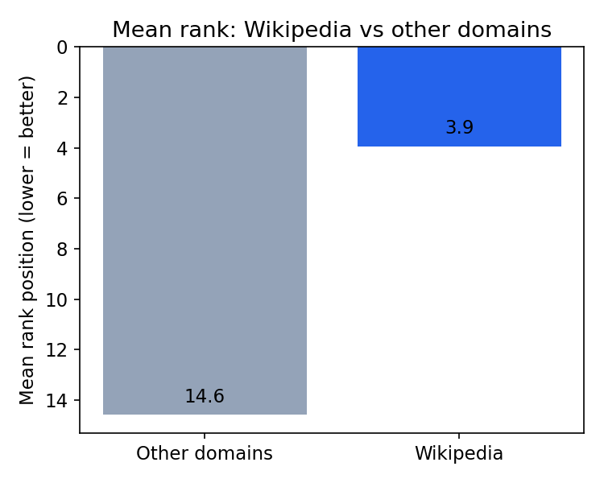
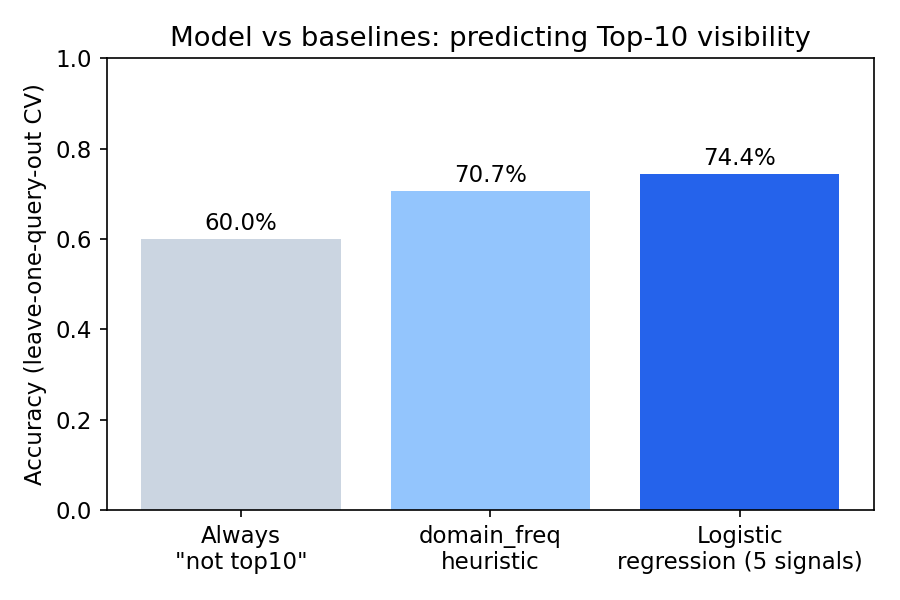
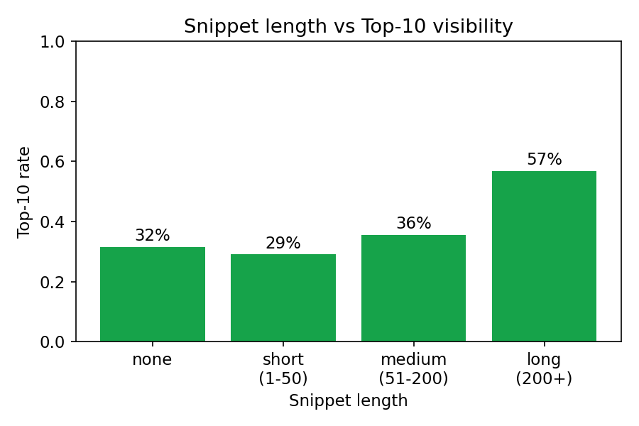
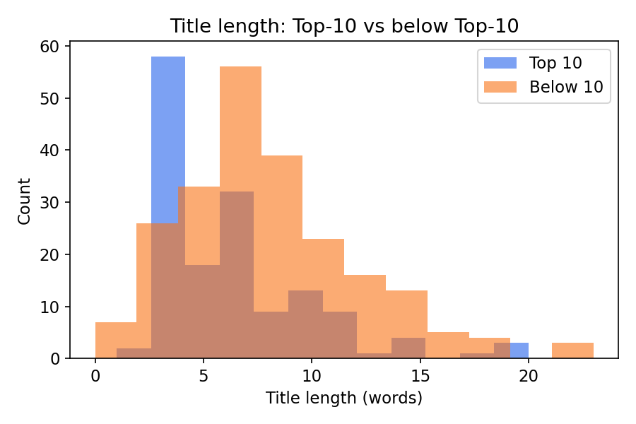

1Abstract
We asked which safe, page-level signals — title wording, title length, H1/snippet content, and how often a domain recurs across queries — are associated with a page landing in Google's Top 10 for a set of AI/ML topic queries. Using rank-1-through-25 SERP data across 15 queries, we correlated eleven candidate signals with rank and Top-10 outcome, then validated a five-signal logistic regression against two baselines using leave-one-query-out cross-validation. Recurring-domain presence was by far the strongest signal (Spearman ρ = −0.54 vs. rank), with Wikipedia pages alone averaging rank 3.9 versus 14.6 for everything else. Exact keyword matching in the title showed no measurable relationship with rank in this sample. The validated model reached 74.4% accuracy and 0.79 AUC, beating a majority-class baseline (60.0%) and a single-signal heuristic (70.7%). Findings are directional and specific to this AI/ML topic cluster, not a general ranking-factor claim.
2Introduction
Content teams routinely get advice like "put your keyword in the title" without a way to check whether it actually correlates with anything in their own data. This analysis exists to support one practical decision: when a content team has limited time, which on-page signals are worth prioritizing first — keyword placement, title length, snippet richness, or simply which domains already dominate a topic space?
We treat this as an observational, page-level study, not a claim about Google's algorithm. The goal is a ranked, evidence-backed set of signals a content or SEO team could act on immediately, with honest caveats about what a 15-query sample can and can't tell you.
3Data
The dataset is a public-safe SERP export: for each of 15 AI/ML-topic queries (e.g. "Artificial intelligence," "Machine learning," "Reinforcement learning"), the top 25 organic results were captured with rank position, page title, H1, meta snippet, result URL, and the query's total indexed-result count. That's 375 rows total — no client names, private queries, credentials, or raw analytics exports are included anywhere in this study.
Three fields had minor missingness (title: 3 rows, H1: 8 rows, snippet: 25 rows), left as-is and treated as "absent" signals rather than imputed, since a missing H1 or snippet is itself a real, observable page condition.
Data quality fix: 13 of 375 rows had raw binary PDF/DOC bytes captured into the snippet field instead of extracted text — one cell alone contained roughly 26 million characters of raw PDF stream data. Left in, that single outlier would have dominated any snippet-length signal and distorted the model's feature scaling. We detected these via a printable-character-ratio check, cleared the snippet text for those rows (kept the row itself), and separately flagged them as PDF results. This cleaning step is fully reproducible in the notebook.
4Methodology
From the raw export we engineered eleven page-level signals, grouped into three families:
- Keyword-matching signals — exact query phrase in title, query-word coverage in title/H1, whether the title starts with the query
- Content-shape signals — title length (characters, words), H1 length, snippet length, whether H1 is missing
- Domain-presence signal — how many times a domain appears anywhere across the 15-query set (
domain_freq, a rough authority proxy built only from presence counts, not from any row's own rank), and whether the domain is Wikipedia specifically
Labels: two binary outcomes — Top 10 (rank ≤ 10) and Top 3 (rank ≤ 3) — plus the raw rank itself for correlation analysis.
Validation design: each query contributes 25 correlated rows sharing the same query context, so a random row-level split would let the model see other rows from the same query during training — a direct leakage path. We used Leave-One-Group-Out cross-validation, grouped by query (15 folds): in every fold the model is evaluated on a query it never trained on.
Baselines: (1) always predict "not Top 10" (majority class, 60.0% accuracy since 40% of results are Top 10 by construction); (2) a single-signal heuristic — predict Top 10 when domain_freq is above the training-fold median.
Model: logistic regression on five signals (domain_freq, title_len_words, snippet_len_chars, h1_query_coverage, title_starts_with_query), standardized within each training fold.
5Results
Signal correlations
| Signal | ρ vs. rank | r vs. Top-10 | p-value |
|---|---|---|---|
| Domain recurs across queries | −0.544 | +0.551 | <.001 |
| Domain is Wikipedia | −0.526 | +0.498 | <.001 |
| Snippet length (cleaned) | −0.227 | +0.261 | <.001 |
| Title length (words) | +0.170 | −0.183 | <.001 |
| Title length (chars) | +0.128 | −0.153 | .013 |
| H1 query-word coverage | −0.112 | +0.066 | .030 |
| Title starts with query | −0.085 | +0.074 | .101 |
| Title exact phrase match | +0.050 | −0.030 | .331 |
| Title query-word coverage | +0.061 | −0.040 | .239 |
| H1 missing | +0.013 | +0.030 | .805 |
Negative ρ vs. rank = associated with a better (lower-numbered) rank. Positive r vs. Top-10 = associated with landing in the Top 10.


Model vs. baselines

The five-signal model beats both baselines, but most of that lift comes from a single signal — recurring domain presence — rather than the keyword-matching signals it was hoped would carry more weight.


6Limitations & honest framing
- Small, single-topic sample. 15 queries, all AI/ML terms, 375 total rows. Findings are observed for this topic cluster, not established as general ranking factors.
- Wikipedia dominance may be topic-specific. Reference-heavy AI/ML terms plausibly favor encyclopedic sources more than, say, commercial or local-intent queries would. This is a directional finding, not a portable rule.
- Domain-frequency is a proxy, not authority data. It measures how often a domain appears across this query set, not backlinks, traffic, or any external authority metric.
- No click or engagement data. This is a visibility (rank) study only — it says nothing about CTR or user engagement, which is a separate lane.
- Correlational, not causal. None of this shows that changing a title's word count or matching keywords more precisely would move a page's rank — only what's associated with rank in this sample.
7Ranked recommendations
Don't over-invest content-team time in exact-keyword title matching for topics like these — it showed no measurable relationship with rank in this sample. Time is better spent elsewhere.
Favor tighter, shorter titles over long descriptive ones where possible — shorter titles were weakly but consistently associated with Top-10 placement.
Treat "who else already ranks here" as a planning input: if a topic's Top-10 is dominated by a small set of recurring domains, competing on keyword optimization alone is unlikely to be sufficient — factor that into whether/how a team pursues the topic.
Before generalizing beyond AI/ML-style informational queries, re-run this same signal report on a broader, more diverse query set (commercial, local, transactional intents) to see whether the domain-recurrence effect and the keyword-matching null result hold up.
8Reproducibility
work/capstone_ranking_signal_analysis.ipynb — full analysis, executed end to end
data/SEO_data_raw.csv — raw SERP export
data/features.csv — engineered signal table
submission/paper_url.txt — this page's deployed URL
The notebook reproduces every number and chart on this page: feature engineering from the raw export, the correlation tables, the leave-one-query-out validation, and the standardized model coefficients.